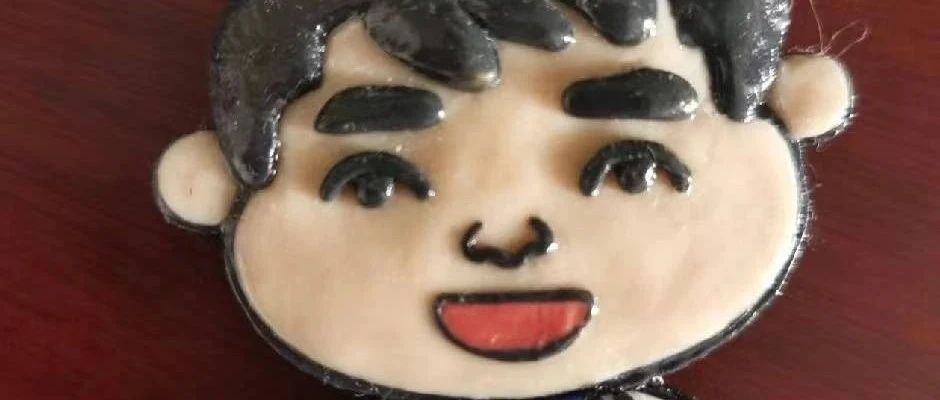

《化繭成蝶31》《手術前準備工作》
原创
youzikuayuerizhi
游子跨越日志记录
2024年10月28日 18:41
上海
手術前需要和醫院醫生確定好手術時間。護士長會提前打電話給您（您在醫院預留的手機號碼）確定好時間后，護士長會打電話回訪您父母的情況，對您要做手術的事情了解否？
其實醫院有這麼多要求，也是對跨性別朋友有一定的好處。無形當中聯絡了你和父母之間的感情，雖然在“跨”的這條道路上艱難不斷，但是沒有父母的支持，自己不夠強大的時候，真的沒有後路可言……
家是避風港，是你遮風擋雨的地方，當你心累的時候可以回來休息片刻，當你不開心的時候可以回來看看，這裡畢竟是你生活的地方，有你的味道，有你的足記，有你的事記，有你的故事……
每一位父母都希望自己的兒女，生活的幸福，美滿，健康，開心，快樂……
（換位思考一下，你站在父母的角度看跨性別這件事情，當你站在醫生的角度看跨性別這件事情，站在自己的角度看一下跨性別手術這件事情）
“如果你是一個普通的父母，
沒什
資源，沒什麼太多文化，
不知道怎麼教育孩子。
那你就多鼓勵他，認可他，
多表揚他，多理解他，多支持他。
不要把自己的認知、焦慮、恐懼、憤怒、委屈，強行轉移給孩子，就是對孩子最好的教育。
孩子若是平凡之輩，那就承歡膝下；
若是出類拔萃，那就讓其展翅高飛，
接受孩子的平庸，
就像孩子從來沒有要求父母，
一定要多麼好一樣……”
事緩者圓，人緩者安。
人性最大的醜陋，
莫過於，
恨你有
笑你無
嫌你窮
怕你富……
文明是什麼？
什麼是文明？
文明是
讓弱者不恐懼，
讓強者不囂張，
讓權利不傲慢，
讓社會更公平，
讓惡人怕作惡，
讓善人能平安。
幼有所教，
少有所學，
病有所醫，
老有所歸。
人人相互尊重，
風氣祥和，
這才是文明……
个人观点，仅供参考